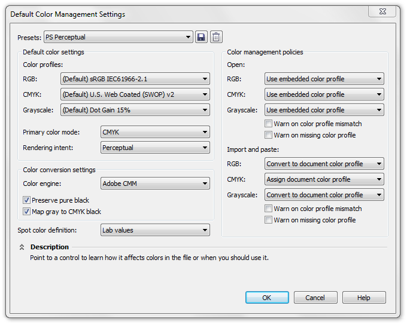
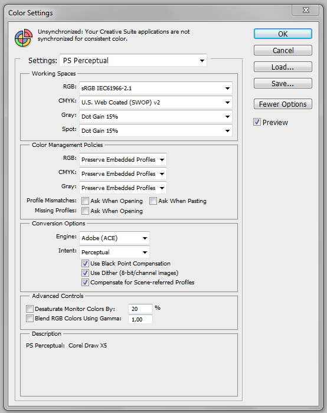
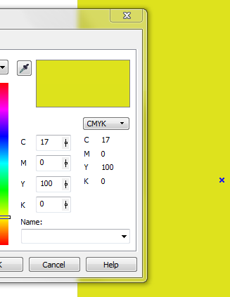

Натройка цветовых профилей в corel X5
Ale / 16.06.2010, 21:38/00:41
Форум:
Как можно настроить цвет в X5.
Во вложении приклеил скрин с настройками цвета из X4.
как правильно настроить настройки для X5.
В X5 вообще не могу найти общий профиль cmyk.
http://cdrpro.ru/forum/5-341-1
большое спасибо)) я переустановил и это помогло, пока что, все в порядке :) и все таки Х5 пока не такой стабильный как хотелось бы)) наверно это исправят...
Привет!
У меня тоже проблема с цветовыми профилями. Помогите настроить пожалуйста.
По настройкам Des425 цвет стал больше походить на нужный, но все же не то
Во вложении разница в цветах
Правильный цвет в 14 Кореле
DjVu, вообще то, те настройки я использую для офсета, а вот эти для принтеров!
Corel:

Ph:


E меня настройки для плоттеров. Я широкоформатку печатаю ;)
DjVu, в какой цветовой модели вы её печатаете?
Печатается из CMYK. Вообще я знаю какой цвет получится при печати. тк ориентируюсь по значениям цветов.
Но есть НО.
При согласовании макета с заказчиком хотелось бы что картинка на экране походила на результат хоть не много
Цвет 17.0.100.0 должен быть зеленее. Он на баннере зеленее
Des425, с этими настройками все не то((
Во вложении настройки 14го, Цветовой профиль тоже kodak ))
Ну раз в СМИКе ))) Нет совершенно ни какой разницы в настройках, печатаете вы на плотере, струйнике или офсете, за одним маленьким НО! Каждое устройство использует свой цветовой профиль. Вывод какой?
Простой - установити СМИК профиль вашего плотера в настройках корела.
П.С. kodak - это не профиль, это был такой движок до 15 версии.
Я хочу чтобы цвета на мониторе отображались темнее, как в 14м кореле. Разница значительная
DjVu, я что то непонятное написал в 19 посте?
Страницы